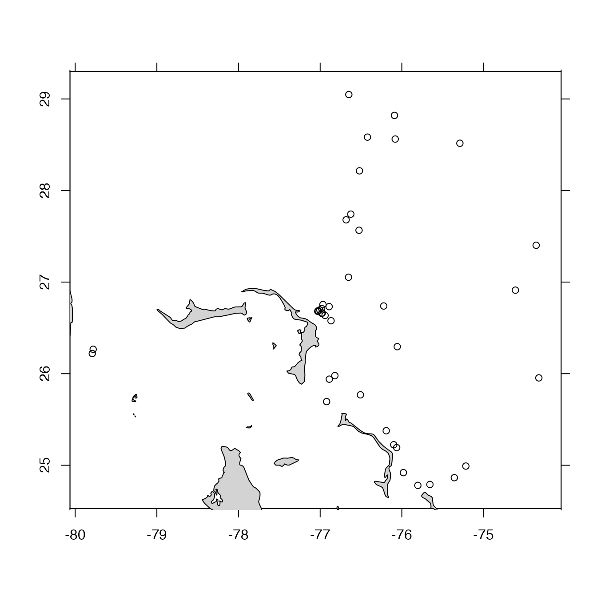

This was created by subsetting a global index to the BGC Argo profiles that were within a 300km radius of Marsh Harbour, Abaco Island, Bahamas, using the following code.
library(argoFloats)
indexAll <- getIndex("bgc")
indexBgc <- subset(indexAll,
circle=list(longitude=-77.06, latitude=26.54, radius=300))Note that the NetCDF files on Argo repositories are changeable,
not just in content, but also in file name. For example, the data acquired
in a given profile of a given float may initially be provided in real-time
mode (with a file name containing an "R" as the first or second character),
but later be replaced later with a delayed-mode file (with a "D" in the first
or second character). Since index files name data files directly, this means
that index files can become out-of-date, containing references to netcdf
files that no longer exist on the server. This applies to the sample
index files provided with this package, and to user files, and it
explains why getProfiles() skips over files that cannot be downloaded.
Other datasets provided with argoFloats:
indexDeep,
indexSynthetic,
index
library(argoFloats)
data(indexBgc)
plot(indexBgc, bathymetry=FALSE)

summary(indexBgc)
#> argoFloats summary
#> ------------------
#>
#> * type: index
#> * server: "https://data-argo.ifremer.fr"
#> * file:
#> * url: https://data-argo.ifremer.fr/argo_bio-profile_index.txt.gz
#> * ftpRoot: c("ftp://ftp.ifremer.fr/ifremer/argo/dac",
#> "ftp://usgodae.org/pub/outgoing/argo/dac")
#> * destfileRda:
#> * header:
#> # Title : Bio-Profile directory file of the Argo Global Data Assembly Center
#> # Description : The directory file describes all individual bio-profile files of the argo GDAC ftp site.
#> # Project : ARGO
#> # Format version : 2.2
#> # Date of update : 20201231182402
#> # FTP root number 1 : ftp://ftp.ifremer.fr/ifremer/argo/dac
#> # FTP root number 2 : ftp://usgodae.org/pub/outgoing/argo/dac
#> # GDAC node : CORIOLIS
#> * index with 39 rows and column names: "file", "date", "latitude", "longitude", "ocean", "profiler_type", "institution", "parameters", "parameter_data_mode" and "date_update"
#> * hint: use getProfiles() to download these files from the repository
#> * Processing Log
#>
#> - 2020-12-31 18:51:06 UTC: `create 'argoFloats' object`
#> - 2020-12-31 18:51:34 UTC: `getIndex(server="ifremer-https", filename='argo_bio-profile_index.txt.gz", age=0)`
unique(indexBgc[["parameters"]])
#> [1] "PRES DOXY"
#> [2] "PRES RAW_DOWNWELLING_IRRADIANCE380 RAW_DOWNWELLING_IRRADIANCE412 RAW_DOWNWELLING_IRRADIANCE490 RAW_DOWNWELLING_PAR DOWN_IRRADIANCE380 DOWN_IRRADIANCE412 DOWN_IRRADIANCE490 DOWNWELLING_PAR FLUORESCENCE_CHLA BETA_BACKSCATTERING700 FLUORESCENCE_CDOM CHLA BBP700 CDOM"
#> [3] "PRES BPHASE_DOXY DOXY TEMP_DOXY"